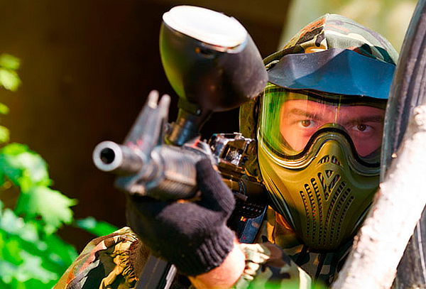

La munición debe adaptarse perfectamente
Si quieres que tu puntería mejore drásticamente sin duda tienes que elegir bolas de pintura o munición que encajen perfectamente en tu marcadora. De lo contrario si eliges un calibre que no toca, la pintura no es redonda o no se ajusta bien a tu marcadora sin duda será más difícil ser preciso. Además recomendamos practicar mucho la puntería para poder mejorar en el paintball y conseguir ganar todas las partidas.
Es importante estar en forma
Piensa que en una partida de paintball no vas a parar ni un segundo, así que sin duda es muy importante estar en forma. Si tienes que estar todo el rato intentando coger aire porque no puedes correr ni dos metros sin duda no podrás concentrarte en el juego y no podrás disfrutar de la adrenalina y emoción que dan este tipo de juegos.
Moverse siempre
Además de todo lo que hemos explicado anteriormente también será fundamental, por ejemplo como vemos en paintball Madrid, el moverse siempre. Ten claro que ésta es una de las claves fundamentales del paintball. Hay que saber moverse y saber cuándo moverse para conseguir encontrar a los otros, que no te encuentren y controlar la partida.
Conoce bien a tu equipo
Sin duda es fundamental conocer bien al equipo con el que vas a jugar si de verdad quieres ganar la partida. Es importante practicar juntos pero si conoces bien vuestras limitaciones no te metas en problemas: no hagas tiros que sabes qué vais a fallar, no os la juguéis si no podéis ganar una tanda rápida. Más vale ser precavidos y apostar a lo seguro con lo que de verdad controláis para conseguir pasar un buen rato y disfrutar más logrando un buen juego.
Tened los objetivos claros
También nos parece especialmente importante tener siempre los objetivos muy claros. Muchos jugadores y equipos de paintball tienden a ser impulsivos, a disparar sin pensar y por tanto al no tener objetivos claros terminan perdiendo la partida. Es importante tener un objetivo claro antes de empezar a atacar ya que así será mucho más sencillo conseguir un objetivo.
Practica siempre tus jugadas
Consideramos que también es importante ensayar en individual para después poder ayudar en el equipo. Lo más interesante es practicar siempre los puntos débiles. Por ejemplo, si eres muy bueno en ataque será mejor que practiques la defensa para poder ayudar a tu equipo en todas las partidas después.
La comunicación en equipo es básica
Por otro lado, también nos parece fundamental tener en cuenta que la comunicación en equipo es realmente básica. Si de verdad quieres conseguir que tu equipo pueda ganar las partidas de paintball sin duda es básico que practiquéis la comunicación ya que esto os ayudará a poder controlar muchísimo mejor la situación en el campo. Los walkies o dispositivos de radio son una buena opción.
La estrategia es fundamental
Por último, debes tener muy claro que para conseguir ganar jugando al paintball es totalmente necesario que establezcas una estrategia con tu equipo. Esto será mucho más eficiente que abrir fuego a diestro y siniestro así que te recomendamos que pruebes a cuidar la estrategia con tu equipo para lograr mejorar.